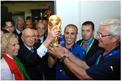

ПРИВЕТ УЧАСТНИКАМ СОРЕВНОВАНИЙ!

Жил-был старик со старухою. Просит старик: «Испеки, старуха, колобок». — «Из чего печь-то? Муки нету». — «Э-эх, старуха! По коробу поскреби, по сусекам помети; авось муки и наберется».
Взяла старуха крылышко, по коробу поскребла, по сусеку помела, и набралось муки пригоршни с две. Замесила на сметане, изжарила в масле и положила на окошечко постудить.
Колобок полежал-полежал, да вдруг и покатился — с окна на лавку, с лавки на пол, по полу да к дверям, перепрыгнул через порог в сени, из сеней на крыльцо, с крыльца на двор, со двора за ворота, дальше и дальше.
Катится колобок по дороге, а навстречу ему заяц: «Колобок, колобок! Я тебя съем». — «Не ешь меня, косой зайчик! Я тебе песенку спою», — сказал колобок и запел:
Я по коробу скребён,
По сусеку метён,
На сметане мешон,
Да в масле пряжон.
На окошке стужон;
Я от дедушки ушёл,
Я от бабушки ушёл,
От тебя, зайца, не хитро уйти!
И покатился себе дальше; только заяц его и видел!..
Катится колобок, а навстречу ему волк: «Колобок, колобок! Я тебя съем!» — «Не ешь меня, серый волк! Я тебе песенку спою!»
Я по коробу скребён,
По сусеку метён,
На сметане мешон,
Да в масле пряжон,
На окошке стужон;
Я от дедушки ушёл,
Я от бабушки ушёл,
Я от зайца ушел,
От тебя, волка, не хитро уйти!
И покатился себе дальше; только волк его и видел!..
Катится колобок, а навстречу ему медведь: «Колобок, колобок! Я тебя съем». — «Где тебе, косолапому, съесть меня!»
Я по коробу скребён,
По сусеку метён,
На сметане мешон,
Да в масле пряжон,
На окошке стужон;
Я от дедушки ушёл,
Я от бабушки ушёл,
Я от зайца ушёл,
Я от волка ушёл,
От тебя, медведь, не хитро уйти!
И опять укатился; только медведь его и видел!..
Катится, катится колобок, а навстречу ему лиса: «Здравствуй, колобок! Какой ты хорошенький». А колобок запел:
Я по коробу скребён,
По сусеку метён,
На сметане мешон,
Да в масле пряжон,
На окошке стужон;
Я от дедушки ушёл,
Я от бабушки ушёл,
Я от зайца ушёл,
Я от волка ушёл,
От медведя ушёл,
От тебя, лиса, и подавно уйду!
«Какая славная песенка! — сказала лиса. — Но ведь я, колобок, стара стала, плохо слышу; сядь-ка на мою мордочку да пропой еще разок погромче». Колобок вскочил лисе на мордочку и запел ту же песню. «Спасибо, колобок! Славная песенка, еще бы послушала! Сядь-ка на мой язычок да пропой в последний разок», — сказала лиса и высунула свой язык; колобок прыг ей на язык, а лиса — ам его! и скушала.